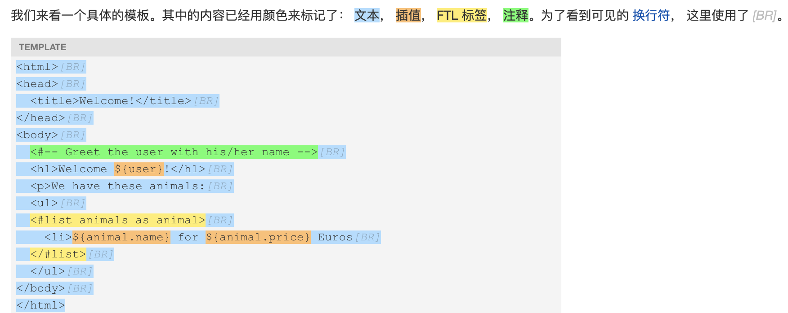
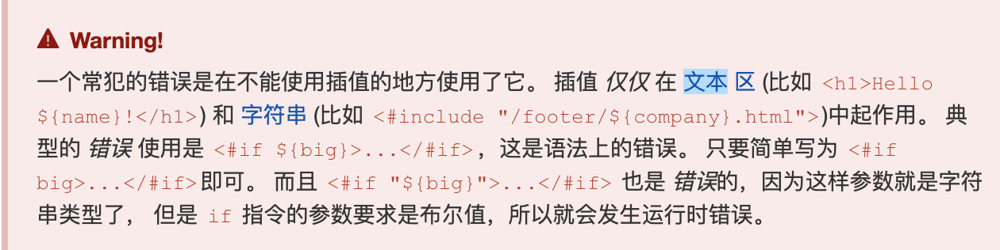

前言
本文记录了初步学习Freemarker的笔记，但手边资料没有Thymeleaf丰富，所以先转用Thymeleaf
1模板+数据模型=输出
- 假设一个应用系统需要一个页面，这个页面的某些信息是根据用户而改变的，比如用户姓名，并且最新的数据来源于数据库，这样才能随时更新，这样就不能使用静态的html代码。
- 此时，可以使用模板，模板和html是一样的，只不过模板会包含一些指令，模板通过解析可以把它们变成动态的内容
- 模板是怎么工作的：
模板文件存放在Web服务器上，当有人来访问这个页面， FreeMarker将会介入执行，然后动态转换模板，用最新的数据内容替换模板中 ${…} 的部分， 之后将结果发送到访问者的Web浏览器中。访问者会接收一个类似普通的html的内容，访问者不会察觉到服务端使用的Freemarker
2.数据模型
- 注意，模板并没有程序逻辑去查询访问者是谁等数据，这些数据是在Freemarker外准备的，通常是JAVA编写的代码，模板作者无需知道这些值是如何算出的（这些值也可以被修改）
- 为模板准备的数据整体被称作数据模型
1
2
3
4
5
6
7
8
9
10
11
12
13
14
15
16
17
18
19
20
21
22
23
24
25
26
27(root)
|
+- animals
| |
| +- mouse
| | |
| | +- size = “small”
| | |
| | +- price = 50
| |
| +- elephant
| | |
| | +- size = “large”
| | |
| | +- price = 5000
| |
| +- python
| |
| +- size = “medium”
| |
| +- price = 4999
|
+- message = “It is a test”
|
+- misc
|
+- foo = “Something”
数据模型基本结构是树状的
上面扮演目录的角色（root,animals，mouse等）被称为hashes（哈希表）
存储单值的变量（size，message等）被称为scalars (标量）
- 如果要在模板中使用子变量， 那应该从根root开始指定它的路径，如：animals.mouse.price
- 另外一种很重要的变量是 sequences (序列)。 它们像哈希表那样存储子变量，但是子变量没有名字，它们只是列表中的项。
3.模板
- 最简单的模板通常是普通的HTML文件，当客户端访问某个页面时， FreeMarker要发送HTML代码至客户端浏览器中去显示。
- 如果想要页面动起来，那么就要在HTML中放置能被FreeMarker所解析的特殊代码片段：
- ${…}： FreeMarker将会输出真实的值来替换大括号内的表达式，这样的表达式被称为 interpolation(插值）
- FTL 标签 (FreeMarker模板的语言标签)： FTL标签和HTML标签有一些相似之处，但是它们是FreeMarker的指令，是不会在输出中打印的。 这些标签的名字以 # 开头。
- 注释： 注释和HTML的注释也很相似， 但是它们使用 <#— and —> 来标识。
- 其他任何不是以上三者的内容被视为静态文本， 这些东西不会被FreeMarker所解析；会被按照原样输出出来。
4.基本指令
- if指令
Welcome ${user}<#if user == “Big Joe”>, our beloved leader</#if>!
true就执行后面的，false那么if之间的就会被忽略1
2
3<#if animals.python.price == 0>
Pythons are free today!
</#if>
当价格为0时，就会打印出 “Pythons are free today!”
else1
2
3
4
5<#if animals.python.price < animals.elephant.price>
Pythons are cheaper than elephants today.
<#else>
Pythons are not cheaper than elephants today.
</#if>
- list指令
list 指令的一般格式为：<#list sequence as loopVariable> repeatThis </#list>
repeatThis 部分将会在给定的
sequence 遍历时在每一项中重复， 从第一项开始，一个接着一个。在所有的重复中，
loopVariable将持有当前遍历项的值。 这个变量仅存在于<#list和</#list>标签内。
普通
1
2
3
4
5<ul>
<#list misc.fruits as fruit>
<li>${fruit}
</#list>
</ul>避免只有0个水果的情况
1
2
3
4
5
6
7<#list misc.fruits>
<ul>
<#items as fruit>
<li>${fruit}
</#items>
</ul>
</#list>用分隔符分隔列出来的水果
1
<p>Fruits: <#list misc.fruits as fruit>${fruit}<#sep>,</#list>
被 sep 覆盖的部分(我们也可以这么来写：<#sep>, </#sep></#list> )只有当还有下一项时才会被执行。 因此最后一个水果后面不会有逗号。
5.总体结构

6.插值
